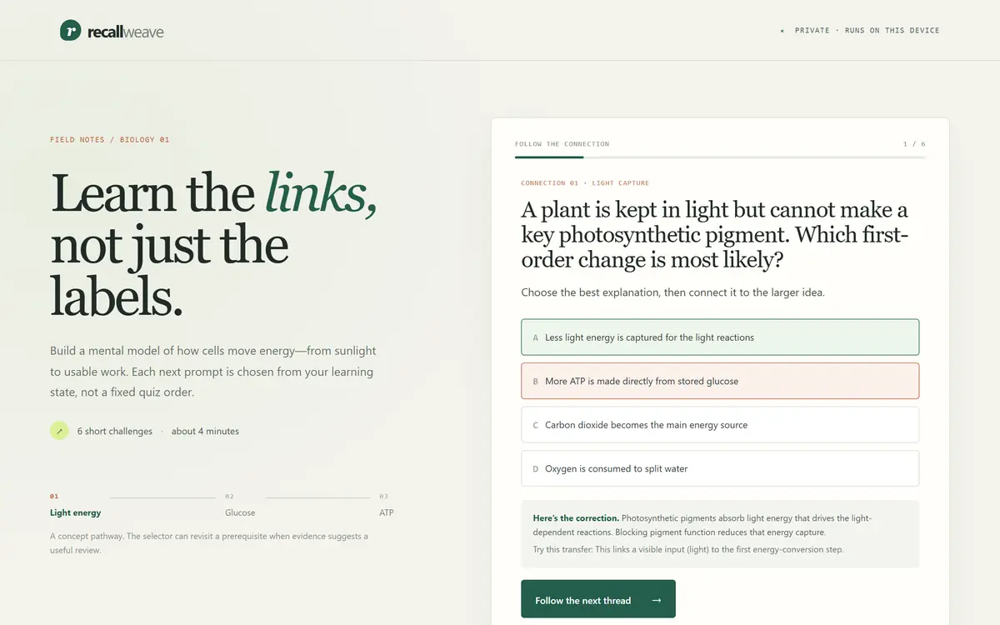
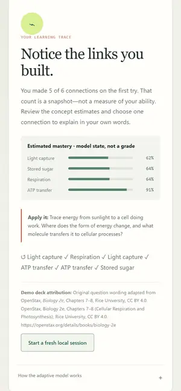

Jacob MetoyerI direct AI agents to carry out what I ask.
AI agents carry out whatever I direct, software included. That work has included running a home estate of several machines, producing research reports, disk and ops cleanup, and building this site. I set the bar and decide what ships. Every demo below runs, and its source is public so you can check the work.
Most engines assume a person at the editor, so agents guess from screenshots. Hamon exposes exact state over MCP and is deterministic: agents can rerun and compare changes. Agents also drive the next feature when the engine falls short.
Games and worlds
A game is marked playable only after its browser build runs here and a real frame has been checked.
Hamon Engine · browser game
Aetherline: Relic Run
Move, turn and jump to collect three relics and open the gate. WebGPU required; keyboard and touch controls, no account or install. No browser audio in this build.
Real Apple M3 Pro WebGPU frames, keyboard/pointer victories and phone-size touch victory checked in native Chrome. Physical phone not tested; WebGPU required.
Each one runs in your browser. The images are captures of the real thing; the links open it.


01ForgeHacks 2026 · AI + Education
RecallWeave
An offline learning toolkit: adaptive lessons, course downloads, authoring tools and interactive science, mathematics and computing labs.
What it does under the hood
The learner exposes Bayesian model estimates, not grades or demonstrated learning gains. Work with local lesson files and explicit downloads; no account or cloud service. Submitted to ForgeHacks 2026 (Devpost entry 1221781).
Paste your own order email, correct the extraction, track multiple due dates and export calendar reminders.
What it does under the hood
Runs the repository parser, merchant policy table, deadline math and RFC 5545 export. Review every field, edit the fallback, filter saved orders and keep all approved data in this browser; the pasted email is never persisted.
03Synthetic airspace / live decision-support workbench
TowerOps Airspace Lab
A traffic-management simulation where you create flights, change their paths and see where conflicts develop.
What it does under the hood
A planner proposes adjustments; each simulated change goes through approval and readback, with an audit trail. The actual AdvisoryPlanner and ControlRoom run in-browser via CPython/WebAssembly, not a mock or replay. It uses synthetic or visitor-provided data and is not operational air-traffic-control software.
A fourteen-tide marsh stewardship game. Keep the Longwater alive through changing tides.
What it does under the hood
Actions resolve against a Rust simulation compiled to WebAssembly. The live build includes a separate practice watch, local progress, a tide journal and an offline download.
Windows-first multimodal research capture: a daemon, versioned worker plugins and sealed session packages, with an offline QC demo on synthetic EMG/IMU data.
Three small Python checks for back-office paperwork (utility bills, freight detention, PT authorizations), run on synthetic data with file:row evidence.
A public-safe reference core for dependency plans, SQLite dispatch custody and reconcile-not-replay. Local adapter tests, not claims about production capacity.
About
I study computer science and physics at Cal State Long Beach, with a minor in biology. I'm a BUILD Scholar working toward MD/PhD training.
I direct AI agents across more than software: running a home estate of several machines, producing research reports, disk and ops cleanup, and building this site. I set the bar and decide what ships.
My research experience spans gait and rehabilitation, behavioral neurobiology, protein molecular dynamics, and collaborative surgical-ergonomics work. I'm interested in measurement, reproducible analysis and scientific software.
Checks come before claims. I keep runnable examples, source and explicit limits with the work. Research contributions are collaborative; synthetic demos are not evidence of clinical validity, learning gains or savings on someone else's data.
The fastest way to reach me or see what I'm working on is GitHub. github.com/Jacob-Met